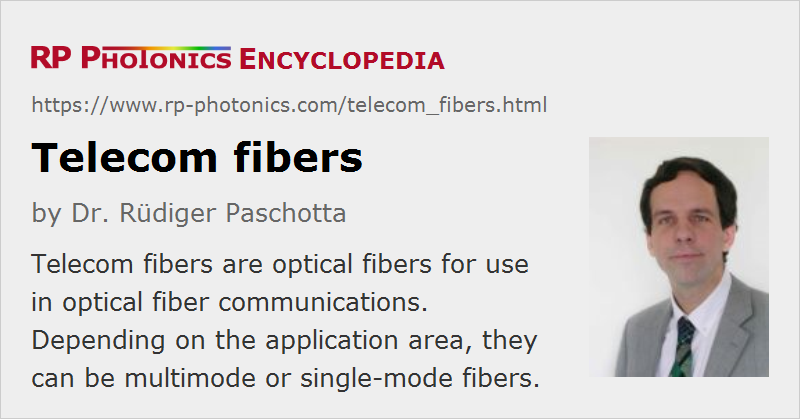

Telecom Fibers
Definition: optical fibers for use in optical fiber communications
German: Telekom-Fasern
Categories: fiber optics and waveguides, lightwave communications
How to cite the article; suggest additional literature
Author: Dr. Rüdiger Paschotta
Telecom fibers are optical fibers which are used in optical fiber communications. Mainly the following types of telecom fibers are used:
- Fused silica single-mode fibers with very low losses (e.g. 0.2 dB/km) are used for long-haul data transmission (tens or hundreds of kilometers) with very high transmission capacity.
- Fused silica multimode fibers, often in the form of graded-index fibers, are suitable for shorter distances of e.g. hundreds of meters (e.g. within storage area networks): they are less critical to handle, essentially due to much larger core areas, but intermodal dispersion limits the transmission distance.
- Few-mode fibers are optimized for mode division multiplexing, i.e., for transmission of multiple signal channels through different fiber modes.
- Plastic optical fibers (also multimode), typically made of PMMA (polymethyl methacrylate, also called acrylic), represent the cheapest solution for short-range data transmission, e.g. in home networks.
A standard single-mode telecom fiber for the 1.3- or 1.5-μm wavelength region is the SMF-28 of Corning, and there is the enhanced version SMF-28e. The mode field diameter is ≈ 9.2 μm at 1310 nm (effective mode area = 67 μm2), or 10.4 μm at 1550 nm (85 μm2). The single-mode cut-off is at 1260 nm. The Lucent AllWave and the Alcatel ColorLock fibers have quite similar properties.
Other telecom fibers have somewhat modified properties, making them more suitable in certain areas:
- Corning offers Vascade fibers in different versions, e.g. the Vascade L1000 with an increased effective mode area, the non-zero dispersion-shifted Vascade LS+, and the Vascade LEAF fiber, a dispersion-shifted fiber with increased mode area.
- Lucent offers different versions of their TrueWave fiber, e.g. the TrueWave-RS with reduced dispersion slope and the TrueWave-XL with larger mode area.
- Alcatel developed the TeraLight fiber, another non-zero dispersion-shifted fiber. (Alcatel has later merged with Lucent to form the company Alcatel-Lucent.)
As glass fibers are not sufficient robust for directly laying them down in a building or even in the ground, they are often incorporated into optical fiber cables, where various polymer layers are sometimes even metallic armors provide additional protection. For flexible indoor use, fiber patch cables with standardized fiber connectors are suitable.
Standards for Telecom Fibers
The International Telecommunications Union (ITU) has developed a number of standards for various types of fibers as used for optical fiber communications. Some of the most important of those standards are listed in Table 1.
| Name | Title |
|---|---|
| G.650.1 (06/04) | Definitions and test methods for linear, deterministic attributes of single-mode fibre and cable |
| G.651 (02/98) | Characteristics of a 50/125 μm multimode graded index optical fibre cable |
| G.651.1 (07/07) | Characteristics of a 50/125 μm multimode graded index optical fibre cable for the optical access network (pre-published) |
| G.652 (06/05) | Characteristics of a single-mode optical fibre and cable |
| G.653 (12/06) | Characteristics of a dispersion-shifted single-mode optical fibre and cable |
| G.654 (12/06) | Characteristics of a cut-off shifted single-mode optical fibre and cable |
| G.655 (03/06) | Characteristics of a non-zero dispersion-shifted single-mode optical fibre and cable |
| G.656 (12/06) | Characteristics of a fibre and cable with non-zero dispersion for wideband optical transport |
| G.657 (12/06) | Characteristics of a bending loss insensitive single mode optical fibre and for the access network |
Table 1: Important ITU standards concerning telecom fibers.
There are various other standards for telecom fibers, e.g. from ISO and IEC.
Relevant Properties of Telecom Fibers
Many different properties of a telecom fiber can be relevant for the achievable performance (partly depending on details of the used fiber-optic links) or concerning other aspects of use:
- The propagation losses (fiber attenuation) in decibels per kilometer (dB/km) are particularly important for long-distance links. For single-mode fibers operated in the 1.5-μm spectral region, they are often of the order of only 0.2 dB/km. Multimode fibers typically exhibit somewhat higher values in the 1.5-μm region, and substantially higher attenuation is obtained for operation at short wavelengths.
- The chromatic dispersion is particularly relevant for single mode fibers in long-distance systems. It is not necessarily best to have a group velocity dispersion (GVD) is small as possible; certain dispersion management techniques work best for fibers with substantial GVD. The spectral slope of GDD (related to higher-order dispersion, particularly TOD) can also be very important for high-bandwidth wavelength division multiplexing. The zero-dispersion wavelength is sometimes of particular interest.
- The differential mode delay (DMD) of multimode fibers is often the limiting factor for the achievable bandwidth–distance product. Carefully designed and fabricated parabolic-index fibers (e.g. of the OM4 class) promised the best performance.
- The strength of nonlinear effects in the fiber is determined by the effective mode area, which can differ quite substantially between different telecom fibers. It is often an important parameter in a system design.
- For some applications, the sensitivity to bend losses is important. This is particularly the case for indoor installations, it may be impractical to avoid tight bending. A manufacturer may e.g. specify the induced macrobend loss in some wavelength range for a few turns of fiber wound up on a mandrel with given bend radius of e.g. 15 mm.
- The core–clad concentricity can be important for the possible quality (in terms of transmission losses) of fusion splices.
- Details of the protective coating, such is its outer diameter and chemical composition, can also be relevant in various ways, e.g. when mounting fiber connectors.
- There can be various environmental specifications, e.g. concerning the allowed temperature range, allowed tensile stress and increased transmission losses caused by high temperatures or water immersion.
- The available fiber length per spool (often many kilometers) may be limited.
Suppliers
The RP Photonics Buyer's Guide contains 20 suppliers for telecom fibers and cables.
Questions and Comments from Users
Here you can submit questions and comments. As far as they get accepted by the author, they will appear above this paragraph together with the author’s answer. The author will decide on acceptance based on certain criteria. Essentially, the issue must be of sufficiently broad interest.
Please do not enter personal data here; we would otherwise delete it soon. (See also our privacy declaration.) If you wish to receive personal feedback or consultancy from the author, please contact him e.g. via e-mail.
By submitting the information, you give your consent to the potential publication of your inputs on our website according to our rules. (If you later retract your consent, we will delete those inputs.) As your inputs are first reviewed by the author, they may be published with some delay.
Bibliography
| [1] | W. A. Gambling, “The rise and rise of optical fibers”, J. Sel. Top. Quantum Electron. 6 (6), 1084 (2000), doi:10.1109/2944.902157 |
| [2] | Standards of the International Telecommunication Union (ITU), see http://www.itu.int/ |
See also: fibers, fiber cables, single-mode fibers, multimode fibers, few-mode fibers, graded-index fibers, fiber patch cables, silica fibers, optical fiber communications, modal bandwidth, bandwidth–distance product, bend losses
and other articles in the categories fiber optics and waveguides, lightwave communications
|  |
If you like this page, please share the link with your friends and colleagues, e.g. via social media:
These sharing buttons are implemented in a privacy-friendly way!